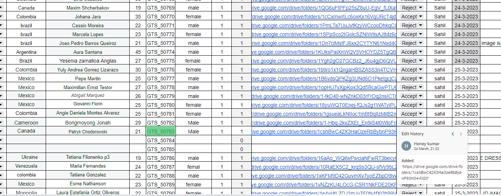
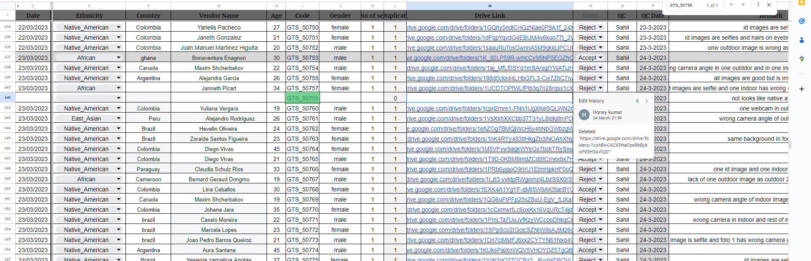

Question asked by ma'am
Q. Did you guys paste accepted links again?? Yes or no? With changed Google drive links?
Sahil himself is not sure of what he is trying to convey he had said "or tum accept link ko uthakr niche cut paste kr dete ho uska kya??
"
but the screenshots that he provided to support his statement shows something else.


It shows that a set/link which was rejected under "not a native american" was pasted under different ethnicity the next day.
some sets were pasted again but not accepted ones. The sets which were pasted again were rejected under not a native american
and so were pasted under different ethnicity.
ABDUL - GTS_50935 - MAIN SHEET
Abdul claimed that this set was accepted first then it was rejected 2 days later.
He wasn't informed about that his set have been rejected 2 days after being accepted.


AKASH - Rework SHEET - 51087
Sahil said on this claim - "ye kl hi tumne change kri h reject krne k bad edit history naam ki bhi chez hoti h"
So let's break it down from the start;
Akash Provided the set on 12/04/2023 which was rejected on 13/04/2023 by sahil for "one outdoor image is not looks
like outdoor and one id is not suitable as hair on shoulder" ok fair enough! Akash then asks the vendor for rework
on the mentioned mistakes on 13 th of april, Tuesday at 8:51 p.m. The vendor provides the rework on same
day after 32 minutes i.e, 9:23 p.m 13th April.
Akash pastes the rework in the rework sheet at 2:01a.m on 14th of April.
This also gets rejected by Jyoti under same statement "one outdoor image is not lookslike outdoor and one id is
not suitable as hair on shoulder". What a coincidence, the rejection is same word by word as it is was copied
and pasted.
Is someone that dumb that he will paste the set with same mistakes in the rework sheet.
The rework was provided at 2:01a.m of 14th of April 2023, effectively on 13th night as per our shift.
QC was done by Jyoti at 4:01p.m of 14th of April 2023.
The question is still the same - If vendor had provided the corrected set why would he paste the rejected set?


Ravi - MAIN & REWORK SHEET
This set was pasted by Ravi on 12/04/2023 and was rejected by Sahil on 13th of April 2023 under "images
in car is not allowed "
. Valid rejection. Then he provided the rework on 13/04/2023, but then it is rejected by
Jyoti on 14th of april citing different reason.
The question is why is it that all the rejections are not mentioned at once?

This is just the report of 14th of April.
Wasn't it valid to raise our issues over the questionable quality checks which have been going on for quite a while now.
90 sets have been rejected as not a native american between 25th of february and 04th of April
wasn't any set out of those 90 which can't work with other ethnicity?